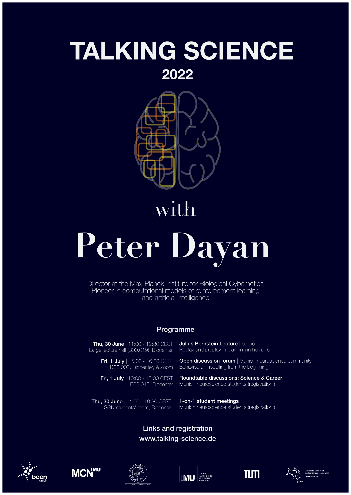

Talking Science with Eve Marder
Talking Science is a unique opportunity to meet and talk about neuroscience with a leading researcher in an informal atmosphere - a two-day program for the MSc and PhD students of LMU, TUM, and the MPIs.

About
This year's guest is Prof. Eve Marder (Brandeis University).
Prof. Peter Dayan's research bridges neuroscience, computational modelling and psychiatry. At this interface, he has advanced the understanding of reinforcement learning and decision-making processes in the brain, as well as the role of neuromodulators and neuronal dysfunction in psychiatric disorders. He is considered a pioneer in the field of artificial intelligence and has long worked at the interface between natural and artificial systems for learning and choice.
He studied mathematics at Cambridge University and received his doctorate from the University of Edinburgh. After postdoctoral research at the Salk Institute and the University of Toronto he moved to the Massachusetts Institute of Technology (MIT) in Boston as assistant professor in 1995. In 1998, he moved to London to help co-found the Gatsby Computational Neuroscience Unit, whose Director he was from 2002 to 2017 and which became one of the best-known institutions for research in theoretical neuroscience. He was also Deputy Director of the Max Planck/UCL Center for Computational Psychiatry and Ageing Research. In 2018, he moved to Tübingen to become a Director at the Max Planck Institute for Biological Cybernetics. In 2017, he was awarded the Brain Prize from the European Brain Research Foundation and received an Alexander von Humboldt Professorship, Germany’s most highly endowed research prize. In 2018, he was elected a Fellow of the Royal Society of the United Kingdom and in 2019, he became a Fellow of the American Association for the Advancement of Science (AAAS). (adapted from https://www.mpg.de/12309357/biologische-kybernetik-dayan)
The Talking Science program consists of two talks, open to the public, and two round table discussions on science and career, open to Munich neuroscience students. Additionally, Munich neuroscience students will have the opportunity to sign up for individual one-on-one meetings with Professor Dayan. Sign up here!
Schedule
- Thursday, 30.06.2022 at 11:00 - large lecture hall (B00.019), LMU Biocenter in Martinsried
- Julius Bernstein Lecture: Replay and preplay in planning in humans
This lecture is open to the general scientific community and is intended as an introduction into the Talking Science program.
"Animals and humans replay neural patterns encoding trajectories through their environment, both whilst they solve decision-making tasks and during rest. Under a common assumption that we build models of the world and recognize and plan actions using those models, such intrinsically generated patterns are ideal for various forms of model inversion, giving us access to fast and effective methods for sensory processing and decision-making. I will discuss recent investigations using magnetoencephalography to detect replay in human subjects as they perform decision-making tasks. In a simple choice task, we found evidence for various forms of replay, which differed between subjects who flexibly adjusted their choices to changes in temporal, spatial and reward structure and those who were slower to adapt to change. The former group predominantly replayed comparatively less good trajectories during task performance, and subsequently avoided these inefficient choices. The latter replayed comparatively preferred, but suboptimal, trajectories during rest periods between task epochs. We suggest that online and offline replay both contribute to planning, but each are associated with distinct model-based and model-free decision strategies.
This is joint work with Eran Eldar, Zeb Kurth-Nelson, Ray Dolan, Georgy Antonov and Chris Gagne."
- Thursday, 30.06.2022 at 12:30 - Martinsried
- Social Event: Lunch
We have very limited places available to invite students to a lunch with Prof. Dayan. Please sign up here! - Thursday, 30.06.2022 between 15:00 and 18.30 - LMU Biocenter Martinsried
- 1-on-1 student meetings
This is an opportunity for a personal meeting with Prof. Dayan, in which you could discuss issues that directly relate to your own research. Each student will get a time slot of 20 mins. Please sign up, as the number of places is limited. - Thursday, 30.06.2022 at 19.30 - location: tba
- Social Event: Dinner
We have very limited places available to invite students to a dinner with Prof. Dayan. Please sign up here! - Friday, 01.07.2022 at 10:00 - B02.045, LMU Biocenter Martinsried
- Roundtable Discussion: Science
This first round table discussion will give you an opportunity to ask questions regarding Prof. Dayan's lecture, and will run into a more detailed discussion about the methods and discoveries in his research. Please sign up here! - Friday, 01.07.2022 at 11:45 - B02.045, LMU Biocenter Martinsried
- Round Table Discussion: Career
In this second round table we will gain insight from Prof. Dayan about his choices throughout his scientific career. Students can also take advantage of this forum to discuss the direction of their own research and future plans. Please sign up here! - Friday, 01.07.2022 13:00 - Martinsried
- Social Event: Lunch
We have very limited places available to invite students to a lunch with Prof. Dayan. Please sign up here! XXX - Friday, 01.07.2022 15:00 - 16:30 - D00.003, LMU Biocenter Martinsried
- Discussion Forum: Behavioral Modelling from the beginning
This discussion is open to the general scientific community.
"Much work has been devoted to formal characterizations of the ways that humans and other animals make decisions in mostly stable, near-asymptotic, regimes in behavioural tasks. Although this has been highly revealing, it hides aspects of learning that happen on the way to this asymptote. I will discuss three attempts that we have been making to use parametric and non-parametric models to capture more of the course of learning: in a spatial alternation task for rats, the International Brain Lab task for mice, and an alternating serial reaction time task for humans. Many incompletely addressed challenges arise - for instance separating individual differences in outcomes into differences between models, differences between parameters within a model, or path dependence from stochasticity in early choices and outcomes."

Past speakers
- 2021
- Ilana Witten (Princeton University)
- 2019
- Adrienne Fairhall (U Washington)
- 2018
- Matteo Carandini (UCL)
- 2017
- Christof Koch (Allen Institute for Brain Science) - cancelled
- 2016
- Gina Turrigiano (Brandeis University)
- 2015
- Gilles Laurent (MPI for Brain Research)
- 2014
- Ed Boyden (MIT)
- 2013
- Larry Abbott (Columbia University)
- 2012
- Nikos Logothetis (MPI for Biological Cybernetics)
- 2011
- May-Britt Moser (Kavli Institute of Systems Neuroscience)
- 2010
- Karel Svoboda (Janelia Research Campus)
- 2009
- Markus Meister (Caltech)
Contact
Talking Science is made possible through the generous support of the Bernstein Center for Computational Neuroscience Munich and organized by:
- Yana Kotlyarenko (MPI for Neurobiology)
- Dina von Werder (TUM)
- Lukas Meyer-Olbersleben (LMU)